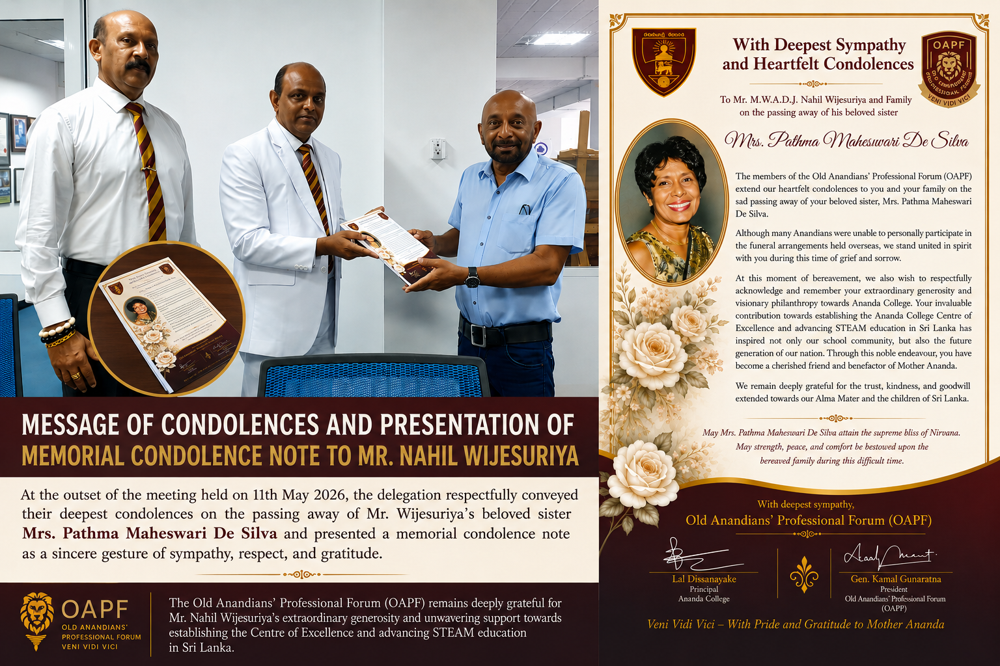
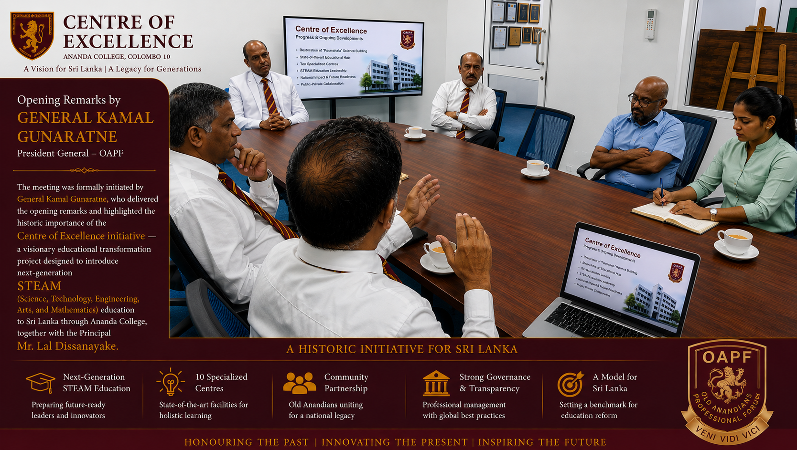
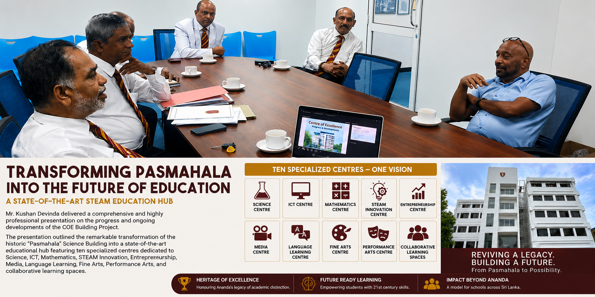
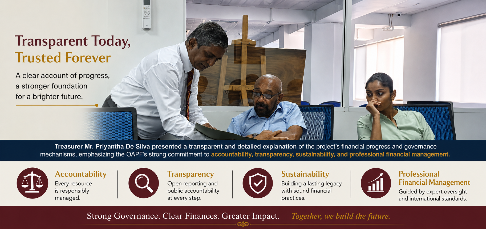
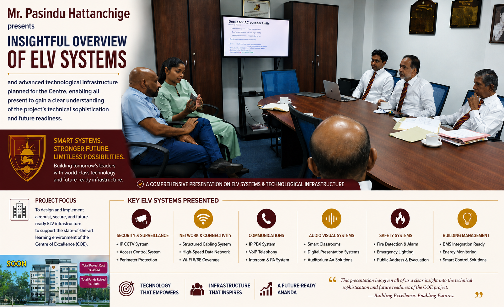

Meeting with Mr. Nahil Wijesuriya: COE Project Progress and National Recognition for Sri Lanka's Pioneering STEAM Education Initiative
Today, 11th May 2026 at 10.30 a.m., a distinguished delegation comprising Principal Mr. Lal Dissanayake, OAPF President General Kamal Gunaratne, and several representatives of the Old Anandians' Professional Forum (OAPF), met with renowned philanthropist and Chairman of East West Properties PLC, Mr. Nahil Wijesuriya, at his office to present the latest progress of the transformational Centre of Excellence (COE) Project at Ananda College.

At the outset, the delegation respectfully conveyed their deepest condolences on the passing away of Mr. Wijesuriya's beloved sister and presented a memorial condolence note as a sincere gesture of sympathy, respect, and gratitude.
Visionary Leadership and Historic Contribution
The meeting was formally initiated by General Kamal Gunaratne, who delivered the opening remarks and highlighted the historic importance of the Centre of Excellence initiative — a visionary educational transformation project designed to introduce next-generation STEAM (Science, Technology, Engineering, Arts, and Mathematics) education to Sri Lanka through Ananda College.
During the discussions, special appreciation was extended to Mr. Nahil Wijesuriya for his extraordinary and historic contribution of Rs. 250 million towards the Centre of Excellence project — one of the largest philanthropic contributions ever received by a Sri Lankan public school for educational transformation.
This remarkable generosity has enabled the realization of a Rs. 350 million national-level educational initiative aimed at reshaping secondary education in Sri Lanka through activity-based, interdisciplinary, and future-oriented learning methodologies.

General Kamal Gunaratne delivering opening remarks
Comprehensive Progress Presentation

Mr. Kushan Devinda presenting COE progress
Thereafter, Mr. Kushan Devinda delivered a comprehensive and highly professional presentation on the progress and ongoing developments of the COE Building Project. The presentation outlined the remarkable transformation of the historic "Pasmahala" Science Building into a state-of-the-art educational hub featuring ten specialized centres dedicated to Science, ICT, Mathematics, STEAM Innovation, Entrepreneurship, Media, Language Learning, Fine Arts, Performance Arts, and collaborative learning spaces.
The presentation further highlighted that the Centre of Excellence is envisioned not merely as an infrastructure project, but as Sri Lanka's first large-scale STEAM education pilot initiative within the public education sector. The project is designed to empower students through inquiry-based learning, project-based education, creativity, innovation, critical thinking, leadership, entrepreneurship, and real-world problem-solving skills.
Mr. Kushan Devinda also explained that the project integrates cutting-edge educational technologies and modern learning environments, including advanced ICT laboratories, interactive digital learning systems, robotics and innovation spaces, creative arts facilities, multimedia learning platforms, collaborative classrooms, and entrepreneurship ecosystems intended to prepare Sri Lankan students for the rapidly evolving global future.
Ministry of Education Recognition
The delegation further informed Mr. Nahil Wijesuriya that the Centre of Excellence initiative has now received highly significant recognition and formal approval from the Ministry of Education of Sri Lanka. During several discussions held between the OAPF leadership, Ananda College administration, academic experts, and senior Ministry officials, the Ministry acknowledged STEAM education as a critically important future-oriented educational reform necessary for Sri Lanka's national education framework.
It was also emphasized that senior Ministry officials and education authorities had personally visited the Centre of Excellence premises to inspect the ongoing developments and to engage in extensive discussions regarding the implementation of next-generation STEAM learning models and curricula for Sri Lanka.
Official Approval: The Ministry of Education has formally granted approval for the renovation and establishment of the Centre of Excellence as a STEAM Education Unit at Ananda College. The official approval recognized the project as a nationally valuable educational initiative and acknowledged the role played by the Old Anandians' Professional Forum and its benefactors in introducing a transformative educational model to Sri Lanka.
The delegation also noted with pride that during meetings with Ministry representatives, it was highlighted that Mr. Nahil Wijesuriya's exceptional generosity and visionary philanthropy are helping Sri Lanka's education system meet the challenges of the next century today. His support was recognized not merely as a financial contribution, but as a historic investment in the future of Sri Lankan children and the advancement of national education.
Financial Governance and Transparency
Subsequently, Treasurer Mr. Priyantha De Silva presented a transparent and detailed explanation of the project's financial progress and governance mechanisms, emphasizing the strong commitment of the OAPF towards accountability, transparency, sustainability, and professional financial management.
It was explained that internationally recognized auditing standards, structured governance frameworks, and public accountability measures are integral parts of the project.

Mr. Priyantha De Silva presenting financial progress
Advanced Technological Infrastructure

Mr. Pasindu Hattanchige presenting ELV systems
Mr. Pasindu Hattanchige then presented an insightful overview of the ELV systems and advanced technological infrastructure planned for the Centre, enabling all present to gain a clear understanding of the project's technical sophistication and future readiness.
A Global Anandian Initiative
During the meeting, it was also highlighted that the Centre of Excellence project has become a truly global Anandian initiative, receiving support from professionals, educationists, entrepreneurs, alumni associations, and philanthropists from Sri Lanka and overseas. Numerous well-wishers and organizations have already pledged major contributions towards the establishment of the ten specialized learning centres and supporting infrastructure.
Mr. Nahil Wijesuriya's Response
Following the presentations and discussions, Mr. Nahil Wijesuriya expressed his deep appreciation and admiration for the extraordinary vision, professionalism, transparency, and dedication demonstrated by the OAPF team and the Ananda College administration.
He warmly commended the initiative as a highly meaningful and nationally important educational transformation project that would create lasting benefits for future generations of Sri Lankan students.
Mr. Wijesuriya further expressed his happiness in seeing the remarkable progress achieved thus far and graciously conveyed his willingness to continue extending his fullest support towards the successful realization of the Centre of Excellence initiative.
It was indeed a moment of immense encouragement and pride for the entire delegation to receive such a highly positive, supportive, and inspiring response from Mr. Nahil Wijesuriya, whose visionary philanthropy continues to play a defining role in shaping one of the most ambitious educational transformation projects undertaken by a Sri Lankan public school.
Conclusion and Gratitude
In conclusion, General Kamal Gunaratne and Principal Lal Dissanayake conveyed their heartfelt gratitude to Mr. Nahil Wijesuriya for his invaluable support, visionary leadership, goodwill, and continued confidence placed in the Centre of Excellence initiative. They also cordially invited him to visit and inspect the ongoing developments of the COE Project at Ananda College at the end of this month.